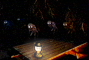
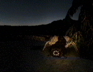

In addition to the information listed here, maps, pictures, and more extensive trip planning information are availiable at the Crimson County Federal Recreation Lands Website Vistor Center. Explore links to camping, hiking, lodging, hunting, wildlife, & the park's spectacular natural and cultural resources.
Crimson County Press Releases
General Management Plan Newsletter 5
Synopsis of public comment on Newsletter 3
Created in 1935, the Crimson County Federal Recreation Lands provide over
one million acres of habitat and protection for a wonderful variety of
wildlife and plant life.
Due to its geographic location and complicated history, Crimson County
Federal Recreation Lands contain a particularly rich biological diversity
of plant and animal species, many of which are unique to the county. This
combination of spectacular scenery, diverse flora and fauna, and complete
isolation from major population centers have combined to make Crimson county
Federal Recreation Lands the center of one of the largest and most unique
ecosystems in North America.
Crimson County and some surrounding regions have been designated 'Biosphere
Reserves' by the MAB International Coordinating Council.